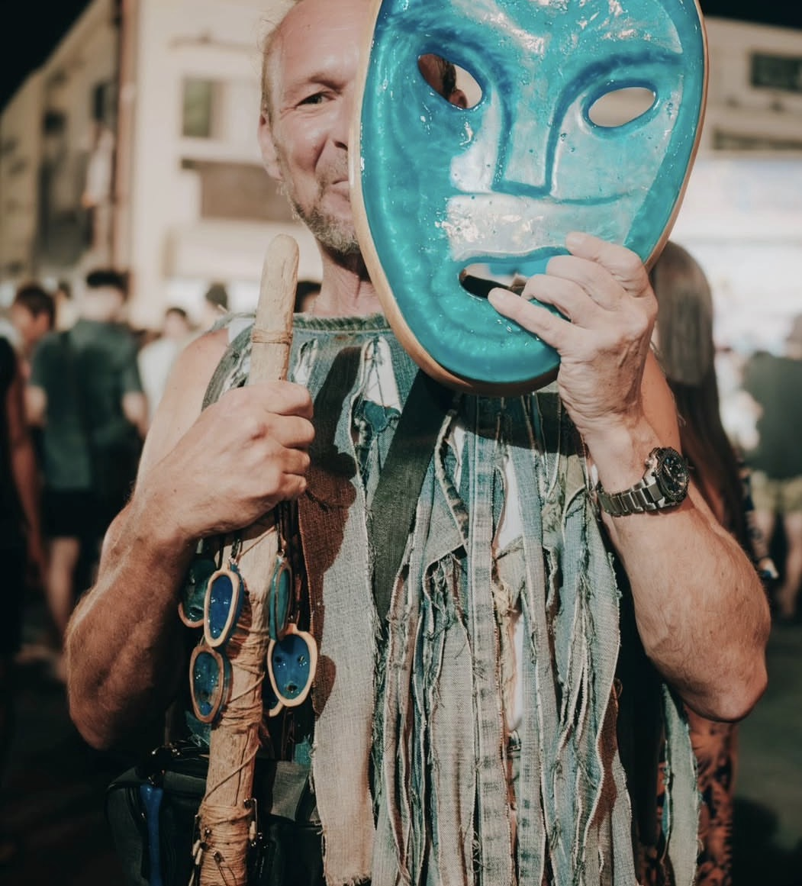
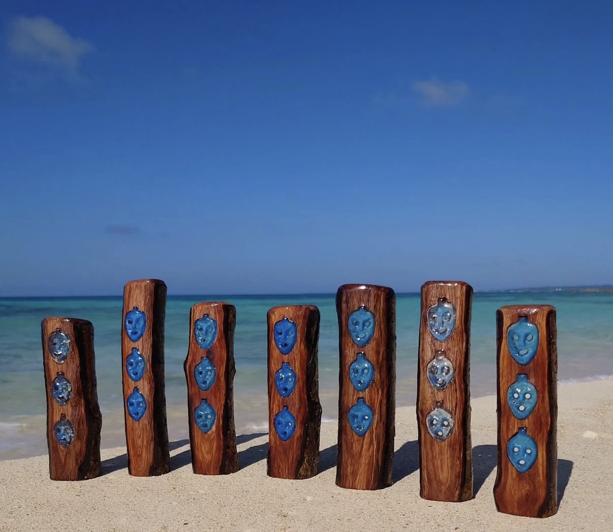
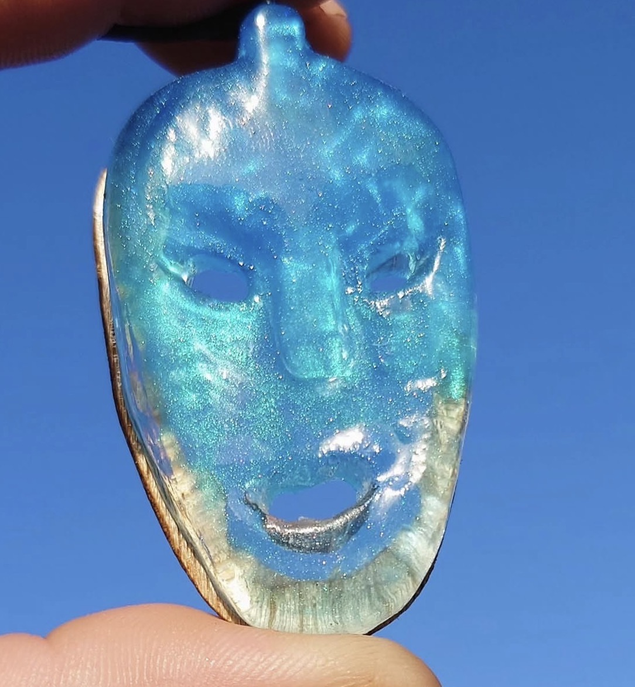
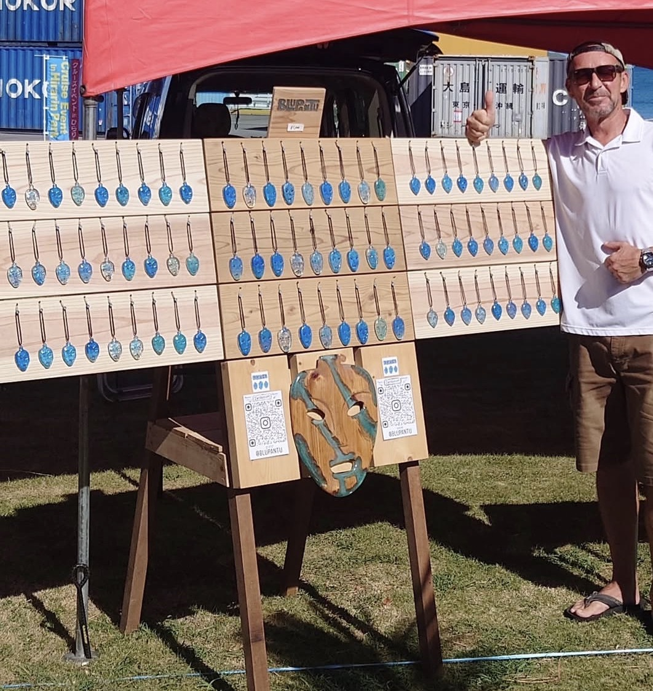
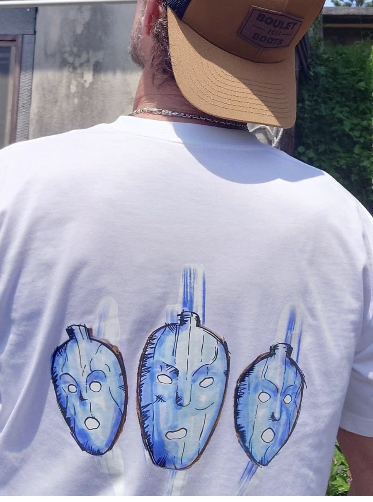
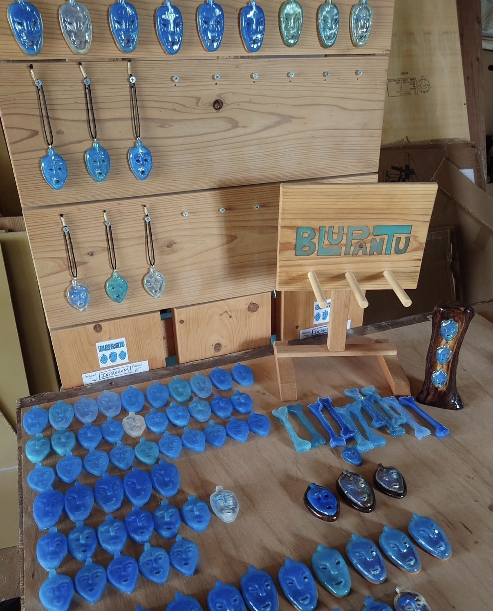
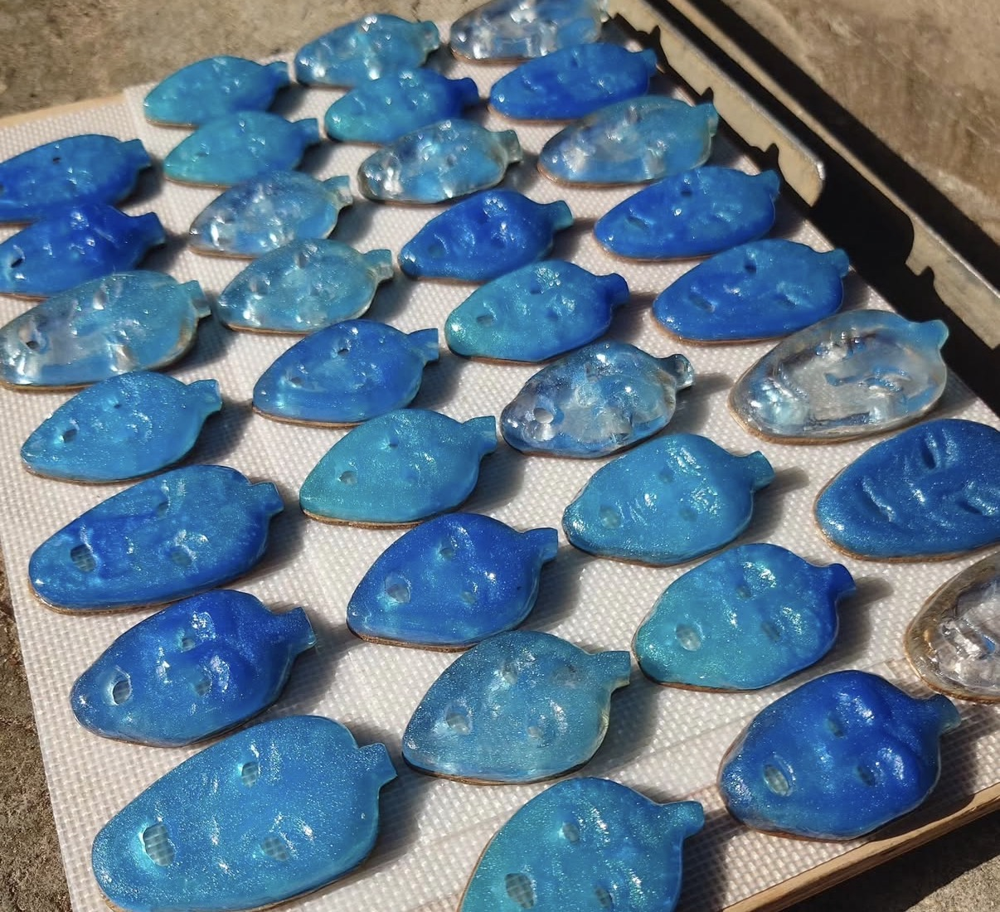

A selected feature in partnership with My Miyakojima
My Miyakojimaとの提携掲載
April 2026 | 2026年4月

Why We Featured This Storyこのストーリーを紹介する理由
Selected for the way Blu Pantu connects Miyakojima's ocean, island mythology, and personal creative expression through a distinct blue visual language.
宮古島の海、島の神話、そして個人の表現が、独自の青い世界観としてつながっているところを大切に紹介しています。
宮古島には、ゆっくりと時間が流れています。 その流れに惹かれ、この島に留まり、 やがて深く根を下ろす人もいます。
ピーター・ミロ・ヤヌトカも、その一人です。 カナダ出身の彼は、10年以上前に宮古島に移り住み、 この島の暮らしに静かに溶け込んできました。
日々を過ごす中で、彼が強く惹かれたもののひとつが 宮古島の伝統行事に登場する「パントゥ」という存在でした。
パントゥは、泥をまとい人々に塗りつけることで 厄払いと再生を象徴する、神聖で力強い存在です。 その姿は、古くから変わらない深い茶色をしています。
彼はその文化を尊重しながらも、 ふと気づきました。
「もし、この存在を宮古島の“海の色”で表現したらどうなるだろうか」
そこから生まれたのが Blu Pantu です。
宮古島の象徴でもある美しい青い海。 その色を宿したパントゥは、 従来のイメージとは異なりながらも、 どこか自然にこの島に溶け込んでいます。
彼は正式な許可を得て活動を続けながら、 作品を通して宮古島への想いを形にし、 同時にこの島へ還元し続けています。
もともと大工である彼は、 数年前に怪我で仕事ができなくなった時期に、 このプロジェクトを本格的に形にしました。
それは単なる作品ではなく、 宮古島で生きてきた時間と想いが重なって生まれたものです。
Blu Pantu は、 文化と創造、そして島への愛が交差する場所に存在しています。
Some people arrive on an island and eventually leave. Others arrive — and stay.
Peter Milo Janutka is one of them. Originally from Canada, he has spent over a decade living in Miyakojima, quietly becoming part of its rhythm and way of life.
Over time, he became deeply drawn to one of the island’s most unique cultural symbols — Pantou.
Pantou is a traditional folklore figure, covered in mud and known for smearing it onto people as a ritual of purification and renewal. It is raw, powerful, and deeply rooted in Miyakojima’s identity.
While respecting its origins, Peter saw something more.
What if this presence could be expressed differently — through the color of the ocean?
From that idea, Blu Pantu was born.
Instead of the traditional earthy tones, his work reflects the striking blue of Miyakojima’s sea — a reinterpretation that feels both unexpected and deeply connected to the island itself.
With official permission, he has continued this work for years, not only creating, but giving back to the place he now calls home.
Originally a carpenter, Peter turned more deeply into this creative path during a period when injury prevented him from working.
What emerged is not just a product, but a reflection of time, resilience, and connection.
Blu Pantu exists somewhere between tradition and reinterpretation — grounded in respect, yet open to new expression.






ピーター・ミロ・ヤヌトカは、カナダ出身で、 10年以上宮古島に暮らすアーティスト兼大工です。
Blu Pantu を通して、宮古島の伝統文化を 現代的な視点で表現し続けています。
彼の作品には、技術だけでなく、 島への深い愛情とつながりが込められています。
Peter Milo Janutka is a Canadian-born artist and carpenter who has lived in Miyakojima for over a decade.
Through Blu Pantu, he continues to reinterpret local culture through a modern creative lens.
His work reflects not only craftsmanship, but a deep and genuine connection to the island.
つながる
Connect and order custom pieces directly here.
こちらから作品のオーダーやお問い合わせが可能です。
📷 Instagram インスタグラム 🌐 Website 公式サイト